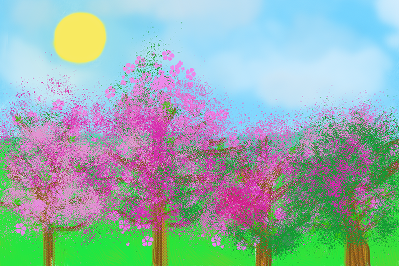

Lab 6
Brief Instructions:
Creating a Painting
The objective in this project was to create a picture from scratch and practice painting it using Photoshop tools. I made an sketch of some trees in a field with the blue sky and sun; then, painted the details.
I chose to do it this way because I wanted to learn how to draw and paint using digital tools.
Last worked on date: 10/31/2021

Last worked on date: 10/31/2021